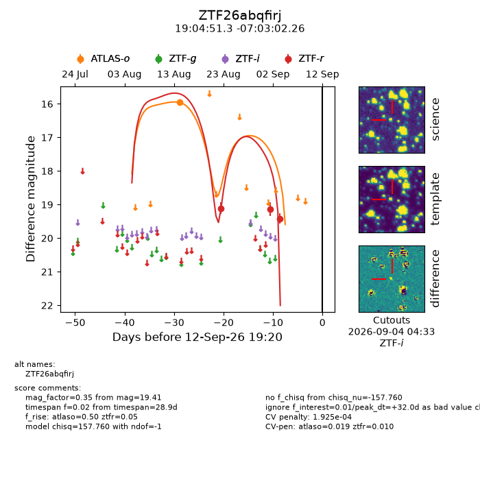
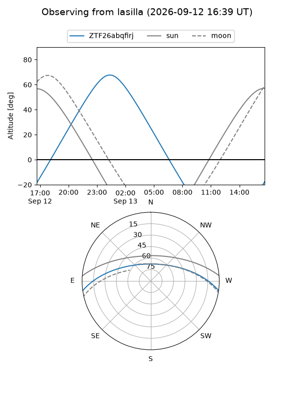
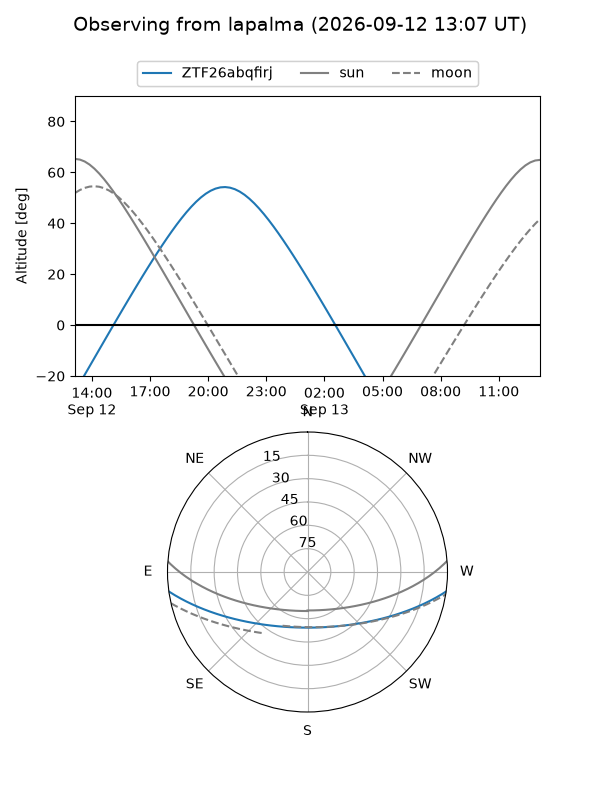
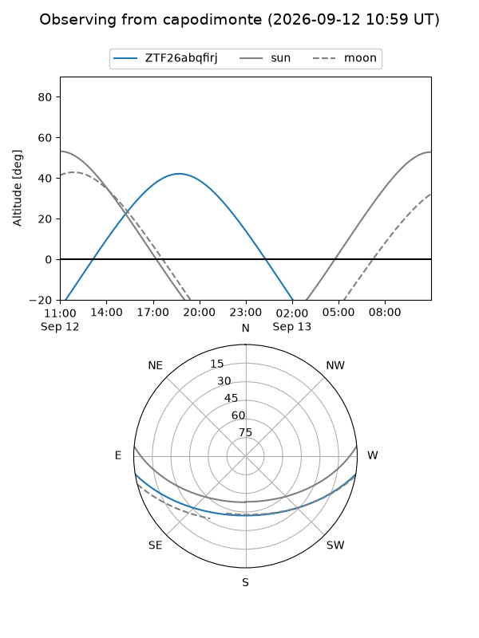
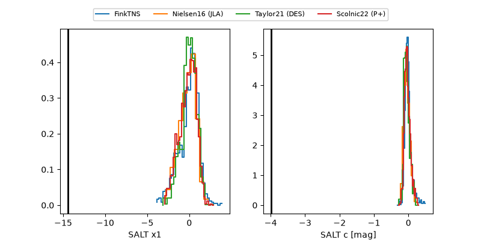

ZTF26abqfirj
Target ZTF26abqfirj at 2026-09-13 07:12
Aliases and brokers:
FINK-ZTF: ztf.fink-portal.org/ZTF26abqfirj
Lasair-ZTF: lasair-ztf.lsst.ac.uk/objects/ZTF26abqfirj
ALeRCE-ZTF: alerce.online/object/ZTF26abqfirj
Direct TNS query: direct search
alt names
ZTF26abqfirj (ztf,fink_ztf)
Coordinates:
equatorial (ra, dec) = 286.2136,-7.05063
equatorial (HMS+DMS) = 19:04:51.25,-07:03:02.26
galactic (l, b) = (28.1565,-6.17967)
Flags:
peak dt: +32.5
likely cv: !!
Photometry:
last atlaso=15.95, ztfr=19.41
1 atlaso, 3 ztfr detections
Lightcurve

Visibility



Additional plots
